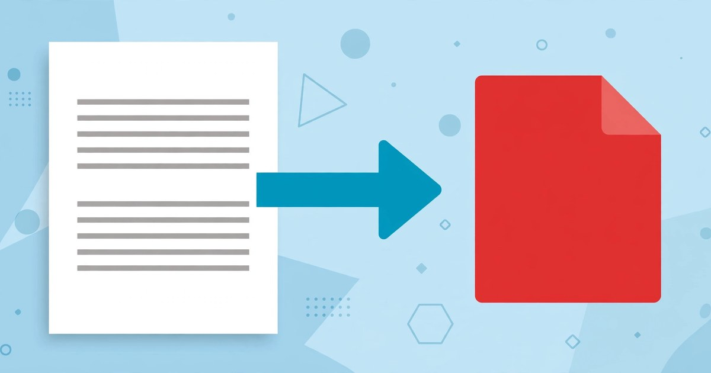

How to Convert Text to PDF Online
Turn plain text into a neat, shareable PDF in seconds — no signup, no upload, no formatting wrestling.
October 18, 2026 · 5 min read

Plain text is the simplest way to write anything — a note, a letter, a set of instructions, a draft for later. It is also the easiest format to lose control of. Paste it into a chat and the line breaks shift. Email it and the recipient sees a different font. The words survive, but the presentation does not.
That is the problem PDF solves. PDF stands for Portable Document Format, and its whole point is that a document looks the same everywhere: the same line breaks, layout, and pages, on any device. Converting text to PDF freezes a plain-text draft into a finished document you can send, print, or file — with no word processor or account needed. This guide shows you how in under a minute, plus what the tool can and cannot do.
What the Text to PDF tool does
The Text to PDF tool takes text you type or paste and turns it into a downloadable PDF file, entirely in your browser. There is no account, no upload, and no waiting for a server: your text never leaves your device. The tool panel has exactly four parts: an optional document title field, a large text box, a font-size dropdown, and a single button.
- Document title (optional). A short title for your document, up to 120 characters. Leave it blank if you do not need one.
- Your text. The main box, where you type or paste the full text of your document.
- Font size. Four options: 10 pt, 12 pt (the default), 14 pt, and 18 pt. Smaller text fits more per page; larger text is easier to read.
- Create PDF button. One click builds the PDF, which then downloads automatically — there is no preview step and no second button to hunt for.
The tool works on plain text only, so it does not offer bold, italics, headings, images, or tables. If your document needs those, use a word processor. If it is words and paragraphs — a letter, a note, instructions, a short report — plain text to PDF is faster and gives you a clean result with no formatting surprises.
Convert text to PDF in 5 steps
- Open the Text to PDF tool. It runs entirely in your browser, so anything you paste stays on your own device.
- Add a document title if you want one. A short, descriptive title tells the reader what the file is. This step is optional.
- Paste or type your text into the “Your text” box. Paste from any notes app or email draft, then read it through once: whatever is in the box is exactly what goes into the PDF.
- Pick a font size. Use 12 pt for an ordinary document, 14 pt for larger print, and 10 pt only to fit a long document into fewer pages. One size for the whole document keeps the result neat.
- Click Create PDF. The tool shows “Creating PDF…”, then confirms your PDF has been downloaded. Check your browser’s downloads folder if the file does not appear at once.
A worked example: a 46-word project update
Here is a short project update, as you might paste it into the tool:
“Project update — 18 October 2026. This week we finished the homepage draft and fixed the three broken links on the contact page. Next week we will review the new pricing page and publish the October newsletter. Action: Sara to send the final prices by Wednesday.”
Counted exactly, that note is 46 words: 262 characters including spaces, or 217 characters excluding whitespace. Those numbers matter because the tool converts exactly what you give it, so a quick count tells you whether you pasted the whole note or only part of it. A Word Counter check before converting takes seconds and catches a half-pasted draft.
Font size changes how the same words fill the page: 18 pt type is 18 ÷ 12 = 1.5 times the size of 12 pt, so each line holds fewer words and the document runs longer, while 10 pt type is 10 ÷ 12 = 0.83 times the size of 12 pt, fitting more per page at the cost of readability. For a short note the difference is trivial; for a long document, start at 12 pt.
Text to PDF vs the alternatives
| Method | Best for | Signup or upload? |
|---|---|---|
| Text to PDF tool | Quick plain-text documents: notes, letters, instructions | Neither — runs in your browser |
| Word processor export | Formatted documents with headings, bold, images, tables | Needs the app; online versions need an account |
| Browser Print to PDF | Saving a web page or an already-formatted document | Neither, but you must get the layout right first |
| Upload-based converters | Converting between file formats you already have | Uploads your file to someone else’s server |
If you already have a formatted document, export or print it. If you have plain text and want a clean PDF without opening a heavy app or sending your words to a server, the Text to PDF tool is the shortest path — and the most private, since no copy of your document sits on a server afterwards.
5 mistakes to avoid
- Pasting without proofreading. The PDF is a snapshot of your text: a typo or half-finished sentence goes straight into the file. Read the text once before clicking Create PDF.
- Expecting formatting that plain text cannot carry. Bold, italics, and images do not survive a paste into a plain-text box. If the document needs them, build it in a word processor.
- Choosing the wrong font size for the reader. 10 pt saves pages but strains eyes; 18 pt is comfortable but makes a short note look padded. Match the size to the reader.
- Sending the PDF without opening it first. Open the downloaded file and skim it before sending or printing it. It takes ten seconds and catches a paste that stopped halfway.
- Using PDF for text you still need to edit. PDF is a finished format, not a draft format. Keep your original text saved somewhere editable, so the next change does not mean retyping everything.
Frequently asked questions
Is converting text to PDF free?
Yes. The Text to PDF tool is free, needs no signup, and runs entirely in your browser.
Can I convert a long document, not just a short note?
Yes — paste the full text and the tool builds a multi-page PDF. For very long documents, skim the first and last pages after downloading to confirm nothing was cut off.
Does the tool keep my text private?
Yes. Everything runs in your browser, and the page states your files never leave your device — nothing is uploaded during conversion.
What if I need to combine this PDF with another one?
Convert each document separately, then join the finished PDFs with the Merge PDF tool. If the result is too large to send, the Compress PDF tool shrinks it; the Image to PDF tool turns pictures into PDFs.
Related tools: Text to PDF · Merge PDF · Compress PDF · Image to PDF